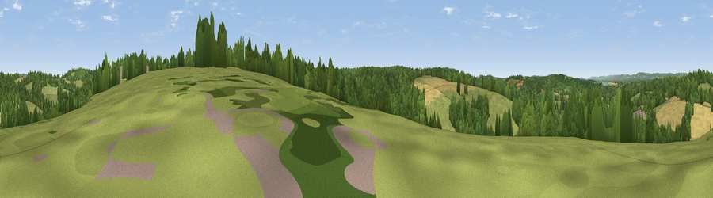

Viewpoint near Speldhurst
#33321 in England · top 23% of its area beats it · near SpeldhurstWhere it is
The exact computed spot (TQ 54475 41675). Click the marker for map links.
The view, rendered

A 360° render of this exact spot computed from the terrain model, tree cover and land cover — summer colours, afternoon light, calibrated against photographs of famous viewpoints. Real trees, hedges and buildings will differ in detail.
The panorama
Grey silhouette: terrain skyline in each direction (720 bearings, Earth curvature and refraction included). Dashed green: skyline with trees (+15 m) and buildings (+8 m) as obstacles. Blue strip: how far the ground is visible on each bearing.
Where the view opens
Wedge length = distance to the farthest visible ground on that bearing (vegetation-aware). Rings at 10, 25 and 50 km.
What fills the view
41% grassland · 41% woodland · 17% cropland · 1% built-up
Angular shares of the visible panorama (visual magnitude), not map area. Landscape diversity 0.47 (0–1 Shannon).
Key numbers
More beautiful places nearby
The staircase of upgrades: each row has a higher view potential than everything closer. Driving times are estimates from straight-line distance, calibrated against real road routing — check an actual route before setting out.
| Place | Direction | Drive | Score |
|---|---|---|---|
| Viewpoint near Speldhurst | N · 1 km | ~3 min | 37.5 |
| Viewpoint near Bidborough | NE · 3 km | ~7 min | 38.5 |
| Viewpoint near Bidborough | NE · 4 km | ~10 min | 38.8 |
| Viewpoint near Cowden | WSW · 6 km | ~14 min | 42.1 |
| Viewpoint near Markbeech | W · 7 km | ~14 min | 44.0 |
| Viewpoint near Tudeley | ENE · 7 km | ~15 min | 48.1 |
| Viewpoint near Town Row | S · 9 km | ~17 min | 48.4 |
| Viewpoint near Sevenoaks Weald | NNW · 11 km | ~20 min | 60.2 |
51.15349, 0.20742 · source: screening · position refined by local search. Computed location — check access rights before visiting.